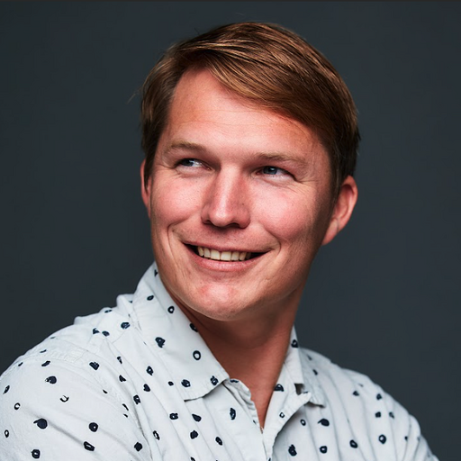

Zack Phillips, PhD

About Me
I’m a full-stack computational sensing engineer and technical leader with experience across biometric sensing (Apple XDG), drug discovery (insitro), and defense (AWARE Project at Duke University). I specialize in designing and deploying pragmatic, end-to-end sensing systems—from optics and electronics to software and machine learning—for decision-critical applications.
My work blends signal processing, optical physics, and computer vision with scalable infrastructure for data generation and analysis. I thrive in execution-focused R&D environments, and enjoy designing and building complex systems under real-world constraints. Over the past few years, I’ve grown into technical leadership and people management, where I focus on clarity, sustainable execution, and empowering teams to solve hard problems with creativity.
Currently, I lead the ML Imaging Team at insitro, where I oversee our imaging platform and develop high-throughput, ML-ready microscopy datasets to support early-stage drug discovery.
I earned my PhD in computational imaging at UC Berkeley, advised by Laura Waller in the Computational Imaging Lab. I co-founded SCI Microscopy, a spin-out focused on open hardware for coded illumination. I completed my undergraduate work in biomedical engineering at UNC-Chapel Hill and worked at Duke’s DISP Lab prior to grad school.
Focus Areas
- Computational Imaging and Sensing
- ML-Ready Data Generation
- Optical and Optomechanical System Design
- Signal Processing and Computer Vision
- Software Architecture and Prototyping
Open-Source
See my GitHub page for personal projects, as well as SCI Microscopy’s GitHub for academic and commercial tools. Some of my work is also featured on my lab’s open-source page.
Recent Publications
- A Pooled Cell Painting CRISPR Screening Platform Enables de novo Inference of Gene Function by Self-supervised Deep Learning
- High-throughput fluorescence microscopy using multi-frame motion deblurring
- Single-shot quantitative phase microscopy with color-multiplexed differential phase contrast (cDPC)
- Coded illumination techniques for phase imaging and motion blur
- Multi-contrast imaging and digital refocusing on a mobile microscope with a domed LED array
See full list of publications and proceedings.
Outside of Work
When I’m not building things, I’m probably surfing, sailing, wingfoiling, or biking. I previously mentored 4th and 5th graders through the SEED environmental education program in Oakland, CA (2014–2018).